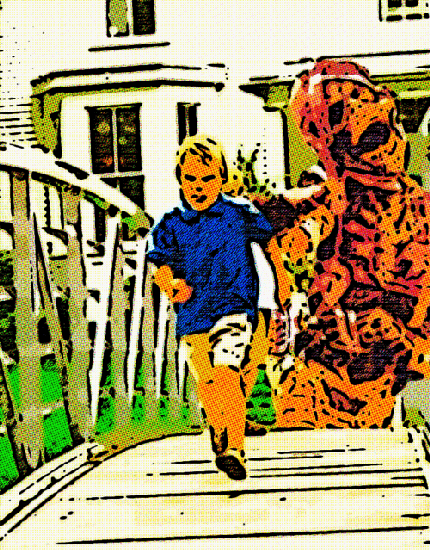

9 Year Old Boy Commits Suicide After Learning Mummies Are Real

{kind=link}

Lodi, NJ – A 9 year old 5th grader attending Hillstop School in Lodi NJ has committed suicide after a lesson on Egypt and mummies. When the boy’s history teacher began showing the class photos of real mummies from a mummy exhibit he had been to at the De Young Museum in San Fransisco, the boy’s face turned white and he began crying and shaking uncontrollably.
He just kept repeating “Mummies, Mummies, Mummies, No. Mummies Mummies Mummies No! Over and over again.” a fellow classmate told us also stating, “He was a dumbass, he believed anything.”
Teachers sent him home early after the incident, as he would not calm down. After dinner, the boy went into his room, put a plastic bag over his head, and suffocated himself. He left a suicide note which said only “Mummies are real. The world is just too scary to live in.”
Funeral services are to be held Monday morning at Galts Funeral Home. Parents are asked to tell their children that mummies are not real until school officials can figure out a way to explain the tragedy.
Related posts

In Theaters This Week: The Wrestler: Feel Good Movie of the Year
Check it out people! The Wrestler from Fox Searchlight Pictures opened in theaters this week. Charlize Theron has reprised her…

Love Me Lincoln Newest VH1 Reality Show
‘ Recently re-Animated dead prez Abraham Lincoln is planning on jumping back in the spotlight this spring. In a recent…

Speed Racer Star Hospitalized After Attack
Fuzzles Of Speed Racer Fame and Clyde, Clint Eastwood's one time companion and star of Every Which Way But Loose,…

How to Score with Nigerian Women - Without Really Trying
Courting rituals in Nigeria are so progressive. In the USA, you can barely get away with saying hi to a…